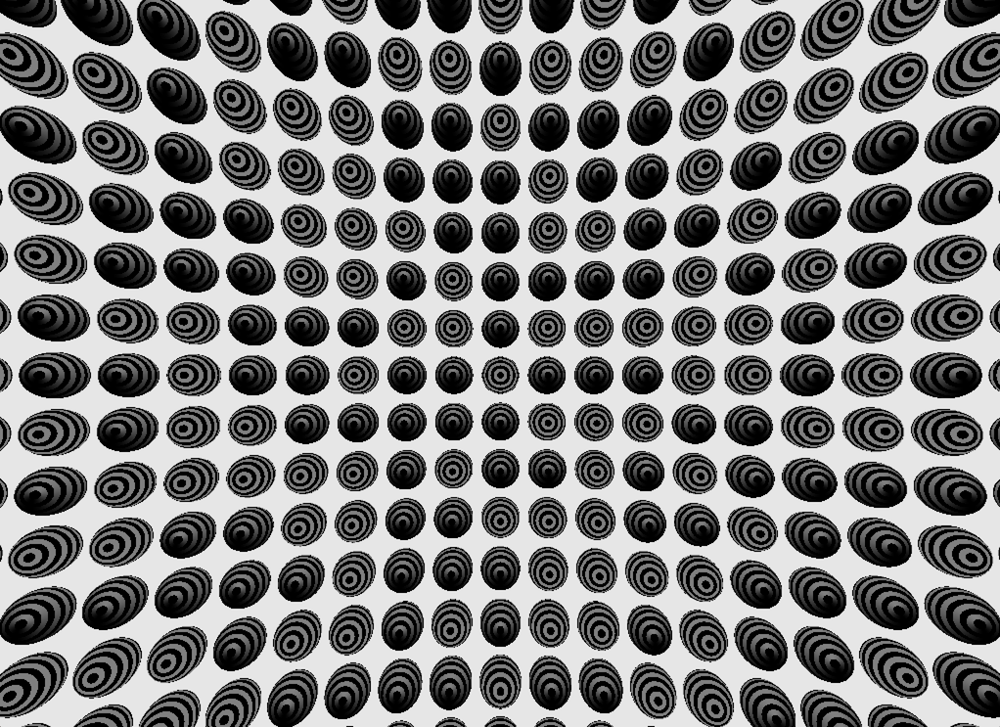

OSensorLibGeoTest¶
Creates a geometry of many spheres arranged at positions on a large sphere and oriented to point the local z-directions of the small spheres at the center of the large one. Renders of the geometry are shaded using the sensor efficiency which is obtained using OSensorLib_sensor_efficiency using the local theta-phi positions of intersects and the sensor category.
{kind=link}
Global frame intersect positions and intersected geometry identities are recorded into the posi.npy array. The posi.npy array is used by OSensorLibGeoTest.py together with the inverse of the saved transforms to obtain local frame intersect positions which are checked to correspond to the known sphere radius.
This test was used to develop OSensorLib, it operates using the SensorLib persisted to $TMP/opticksgeo/tests/MockSensorLibTest by MockSensorLibTest.
Normal running:
MockSensorLibTest # creates SensorLib arrays with default number of angular efficiency categories
OSensorLibGeoTest # loads, converts to GPU and tests texture access making a snapshot shaded by efficiency
Check operation when there is no angular efficiency:
MockSensorLibTest 0 # argv[1] is the number of angular categories, 0 when no angular efficiency
OSensorLibGeoTest # the snapshot should be uniform grey across the spheres
To check error handling with no persisted SensorLib:
rm -rf $TMP/opticksgeo/tests/MockSensorLibTest
OSensorLibGeoTest ## should exit with FATAL message
See: optickscore/tests/MockSensorLibTest.cc